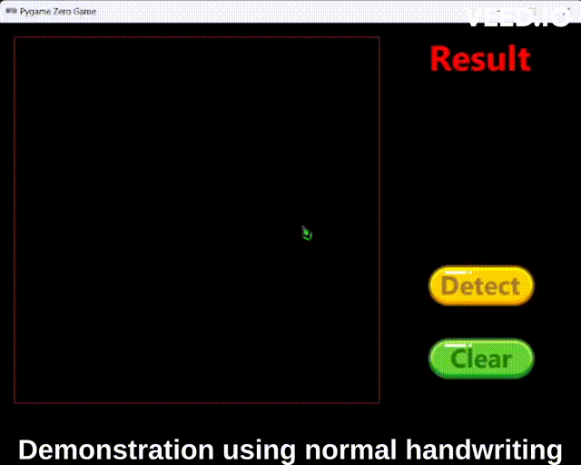

KNN, Neural Network, Convolutional Neural Network classifier models

I trained three AI models, KNN, Neural Network, and Convolutional Neural Network models, on around 1500 mouse-written numbers, then using the trained models
to predict human mouse-writing numbers in real time and testing out their real life accuracy.
I backtested a well-known investment strategy (moving average strategy) on a few stocks in the tech sector and found out that the strategy does not add much value.
Here I built python codes to compare the performance of binary search to linear search in terms of their respective calculation speed.
I developed a model to recognise handwritten numbers and fashion items. I trained the Python based KNN, neural network (NN), and convolutional neural network (CNN) algorithms on the MNIST and Fashion-MNIST datasets.
Here are some other cool python algorithms:
1. factorial.py [A code that can calculate the factorial of a number]
2. gcd.py [A code that can calculate the greatest common divisor (gcd) of two numbers]
3. lcm.py [A code that can calculate the lowest common multiple (lcm) of two numbers]
and lastly...
4. palindrome_number.py [A code that can test if the number is a palindrome number]